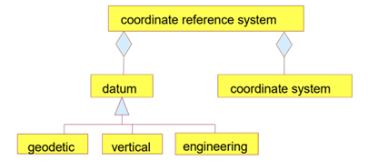
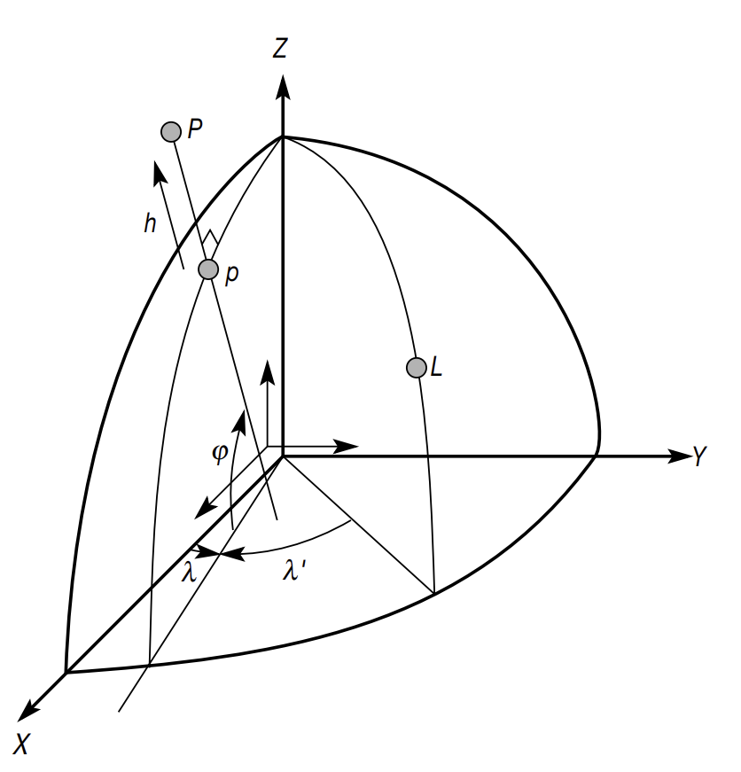
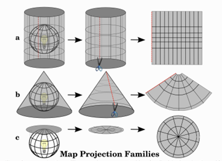
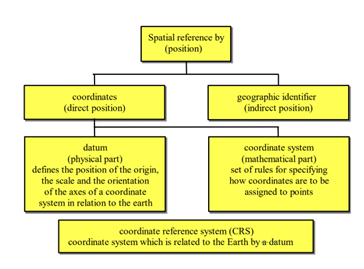

Introduction to Coordinate Reference Systems
What is a Coordinate Reference System?
When working with geospatial data in R—or in any Geographic Information System (GIS)—understanding Coordinate Reference Systems (CRS) is essential. CRSs provide the mathematical and conceptual framework that builds a connection between real-world locations on Earth’s surface and data points by mathematical modelling. The choice of CRS depends on the regional extent of the Area of Interest. Every CRS consists off a projected coordinate reference system and a geographic reference system (QGIS Documentation). The CRS tells Geographic Information Systems (GIS), such as R, where raster data s located in geographic space (Data Carpentry).
What are we referencing to?
Before working with coordinate reference systems (CRS), it’s useful to first understand the shape of the Earth — our starting point. While we often describe Earth as a sphere, it’s not a perfect globe. Its shape is influenced by gravity, varying topography, and fluctuating sea levels, making it far more complex.
The most accurate model of Earth’s irregular surface is called the Geoid. It reflects variations in gravity and represents the shape the oceans would take under the influence of Earth’s gravity and rotation alone, without winds or tides. However, because of its complexity, the Geoid is difficult to describe mathematically.

To simplify calculations and mapping, scientists use reference ellipsoids — mathematically defined, smooth, and slightly flattened spheres. These rotation ellipsoids approximate the shape of the Geoid and are easier to work with in geospatial analysis. While they don’t match the Earth’s true surface perfectly, they offer a practical solution for working at global or regional scales. Different ellipsoids are optimized for different areas of the Earth, especially when precision is needed on a local level (Janssen 2009)

Core Components of a CRS

Datum
The datum is like the coordinates system’s anchor. It defines the Earth’s center. The Z-axis points through the North and South Poles (aligned with Earth’s rotation), the X-axis points towards the Prime Meridian (zero longitude), the Y-axis completes the 3D system at a right angle to the others (Seeger 1999). A quite well-known global datum is e.g. WGS84 (World Geodetic System 1984) that is also used in GPS.

Coordinate System
Coordinate systems is like a set of rules that tells us how to describe locations on a map or in space. It defines:
How many directions we need to describe a point (like 2D with x and y, or 3D with x, y, and z),
The order in which we write the coordinates (e.g., is it (x, y) or (latitude, longitude)?),
What kind of values the coordinates are (like angles in degrees or distances in meters).
Projection
A projection i.e. map projection, describes the mathematical representation of a 3-dimensional, spherical, geodetic ellipsoid as a 2-dimensional plane. One can imagine positioning a light source in a transparent, resulting in shadows on the walls. Most well-know projecitons are e.g. the Universal Transverse Mercator (UTM) and Gauß-Krüger projection (Seeger 1999). There are different forms of map projection methods: cylindrical, cone, flat surface.

Why is it important for geospatial data?
CRSs are fundamental in locating and analyzing spatial data. They determine how your data connects to real-world geography and impact everything from visualization to statistical modeling. In fact, all coordinates are based on a reference systems that changes periodically, since the Earth does as well (e.g. tectonic movements, volcanic eruptions etc.) CRSs contain all parameters necessary to locate a point i.e. datum (the “center”), coordinate system (measurement framework) and the coordinates (direct or indirect positions). So to make use of coordinates and to visualize spatial phenomenons on a map you need a CRS (Seeger 1999). The choice of map projection you choose for your research depends manly on the regional extent on your Area of Interest (AOI), your research motives. Also, you should look in to the accuracy of different CRS for your AOI, but we’ll have a look into that later.
Real-world Applications

Different types of CRS
Geographic Coordinate System: Coordinates are in degrees of latitude and longitude (and height). The latitude is parallel to the equator and the longitude perpendicular to the equator, creating a grid.
Projected Coordinate System: There are 2-dimensional PCS containing 2 axis, the XY-plane. As well as, 3-dimensional PCS that add a Z-dimension, the dimension of space.
What are EPSG codes?
Accuracy of map projections

Every map projection shows a form of distortion i.e. inaccuracy to reality. A map projection is always compromising between angular, distance or area conformity. Therefore when choosing a CRS for your research you need to find one best fitted for your objectives.
Angular Conformity/ Orthomorphic projections: Keep the angles between directions correct — just like on a real compass. That’s helpful when accurate shapes and directions are more important than size. Therefore these maps are commonly used for navigation or meteorological data. Orthomoprhic projections are e.g. the Mercator or the Lambert Conformal Conic projection.
Equal distance/ Equidistant projections: Keep distances accurate, but only from one or two specific points or along certain lines. For example, if a city is in the center of the map, the distance from that city to other places is correct. These projections are most useful in seismic mapping or navigation. Equidistant projections are e.g. the Plate Carrée Equidistant Cylindrical and Equidirectangular projection.
Equal area projections : Keep the same proportional relationship of areas. Used mostly for educational maps, city planning, more precise for smaller spatial extent. Map projections that preserve an equal distance are e.g. Alber’s equal area, Lambert’s equal area and Mollweide Equal Area Cylindrical projection.
Transformations & Conversions
When working with geospatial data you might encounter different sources that all use different CRS. When CRSs are not alligned correctly distances can be wrong, areas can be distorted and point’s won’t match up, even if they are in the same real world location. To overlay, analyse and interpret data they must all be in the same CRS. In this case conversion or transformation into other CRSs might be necessary. Conversions mean the change of the coordinate from one CRS to another, based on the same datum. Transformations mean a change of coordinates from one CRS to another with different datum but based on a set of points common in both CRS (Data Carpentry 2025).
Working with CRS in R
Metadata like the CRS can be looked into with st_stars(), crs() or in terra. With the stars and the terra package the CRS can be checked on and also reprojected.
Tools and standards
CRS information can be represented and transformed in PROJ an open-source library storing. GDAL can help in translating between various geospatial formats, editing and manipulating vector and raster files. Also, repojection with GDAL is possible (Data Carpentry 2025).
Best Practice
Literature
Data Carpentry. (n.d.). Introduction to coordinate reference systems. https://datacarpentry.github.io/organization-geospatial/03-crs
Federal Agency for Cartography and Geodesy (BKG). (n.d.). European spatial reference systems. https://crs.bkg.bund.de/pub01EuropeanSpatialRefernceSystems.pdf
Janssen, V. (2009). Understanding coordinate reference systems, datums and transformations. https://figshare.utas.edu.au/articles/journal_contribution/Understanding_coordinate_reference_systems_datums_and_transformations/22873136/1?file=40609577
Seeger, H. (1999). Spatial referencing and coordinate systems. Geographical information systems, 1, 757-766. https://www.geos.ed.ac.uk/~gisteac/gis_book_abridged/files/ch30.pdf
QGIS Project. (2024). A gentle introduction to GIS: Coordinate reference systems. QGIS Documentation. https://docs.qgis.org/3.40/en/docs/gentle_gis_introduction/coordinate_reference_systems.html